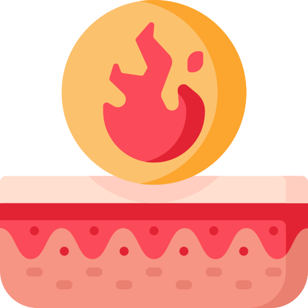

Queimaduras
Uma queimadura é uma lesão na pele causada pelo calor, produtos químicos, eletricidade ou radiação. A gravidade da queimadura depende da profundidade da lesão e da extensão da área afetada
Uma queimadura é uma lesão na pele causada pelo calor, produtos químicos, eletricidade ou radiação. A gravidade da queimadura depende da profundidade da lesão e da extensão da área afetada
O engasgo é uma manifestação do organismo para expelir alimento ou objeto que toma um “caminho errado”, durante a deglutição (ato de engolir)
Também conhecida como parada cardiorrespiratória, é a interrupção súbita da função cardíaca, da respiração e da consciência.
O afogamento é um evento grave que pode ser fatal se não for atendido rapidamente. Medidas preventivas como saber nadar e usar equipamentos de segurança são importantes para evitar afogamentos.
Uma fratura completa ou parcial em um osso. As causas de fraturas ósseas incluem trauma, uso excessivo e doenças que enfraquecem os ossos.
Uma fratura completa ou parcial em um osso. As causas de fraturas ósseas incluem trauma, uso excessivo e doenças que enfraquecem os ossos.
O desmaio (síncope) é uma perda repentina e rápida de consciência em que a pessoa cai no chão ou em uma cadeira, seguida pelo retorno da consciência.